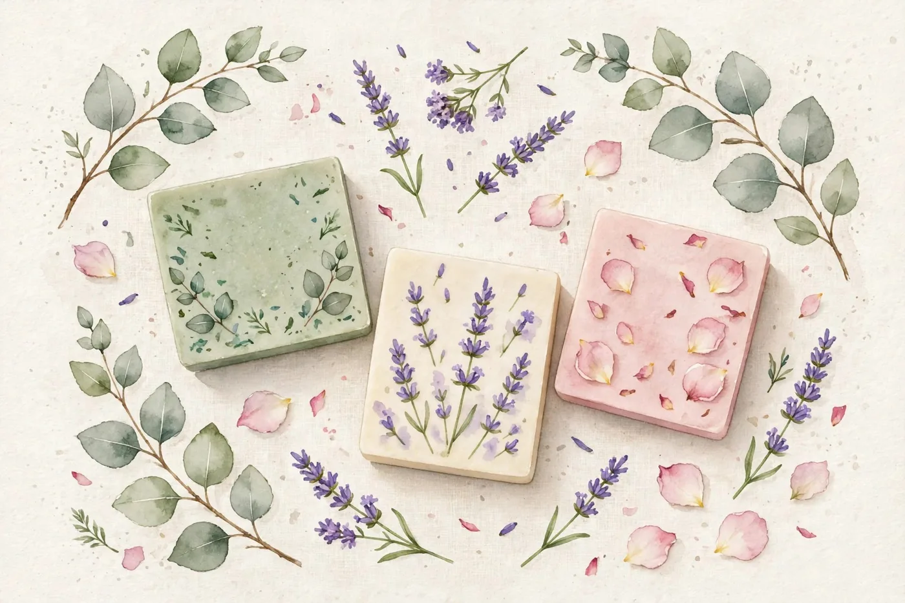
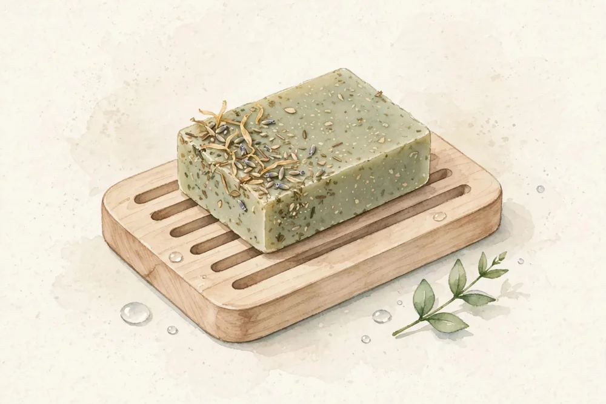

Moja tu piel
Humedece manos, rostro o cuerpo con agua tibia. El agua tibia ayuda a abrir el poro sin resecar.
Paso a paso, para cuidar tu piel y aprovechar cada barra hasta el final

Gracias por elegir un jabón hecho a mano. Sigue estos 6 pasos para cuidar tu piel y aprovechar cada barra hasta el final.
Humedece manos, rostro o cuerpo con agua tibia. El agua tibia ayuda a abrir el poro sin resecar.
Pasa la barra bajo el agua unos segundos. No la dejes remojando en un charco.
Frota la barra entre las palmas hasta crear espuma. Para el rostro, usa solo la espuma, no la barra directa.
Aplica la espuma con movimientos circulares, sin tallar fuerte. Si tu jabón tiene flores o semillas, no frotes esa parte sobre la piel delicada.
Deja la espuma sobre la piel de 20 a 30 segundos y respira su aroma botánico. En piel sensible, enjuaga de inmediato.
Enjuaga con agua tibia, seca a toquecitos con una toalla limpia y aplica tu crema o aceite habitual.
Uso diario, las veces que necesites. Frota palmas, dorso y entre los dedos por 20 segundos y enjuaga.
1 a 2 veces al día. Solo con la espuma de las manos, evitando ojos y labios. Enjuaga bien y no lo uses como exfoliante diario si tu barra tiene textura.
En la ducha diaria. Puedes usar la barra directa o una esponja suave / bolsita de sisal para más espuma y una exfoliación ligera.

Gracias por apoyar lo hecho a mano
ITZGA · Jabones y velas artesanales hechos a mano en CDMX
Taller artesanal · Ciudad de México · Hecho a mano, con amor